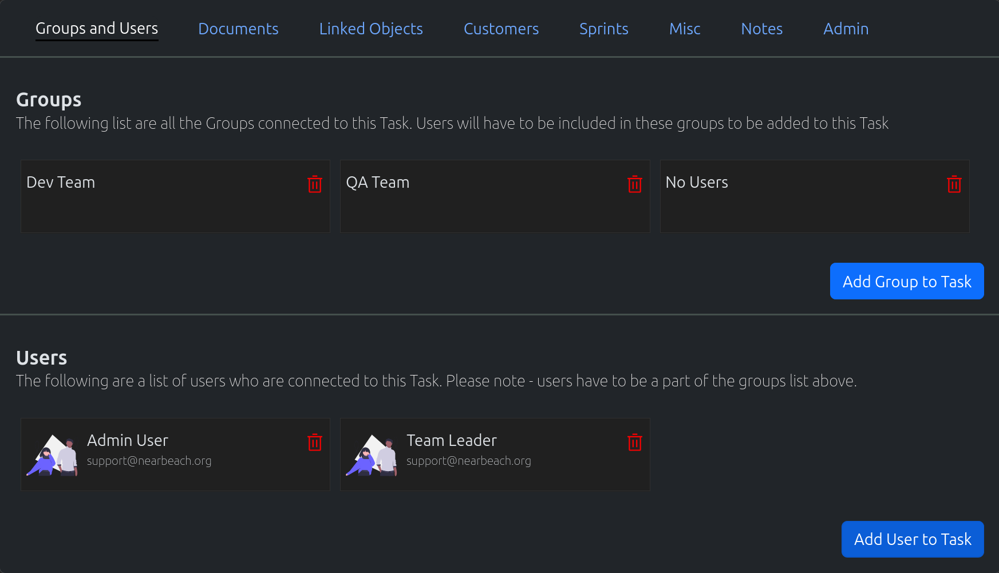
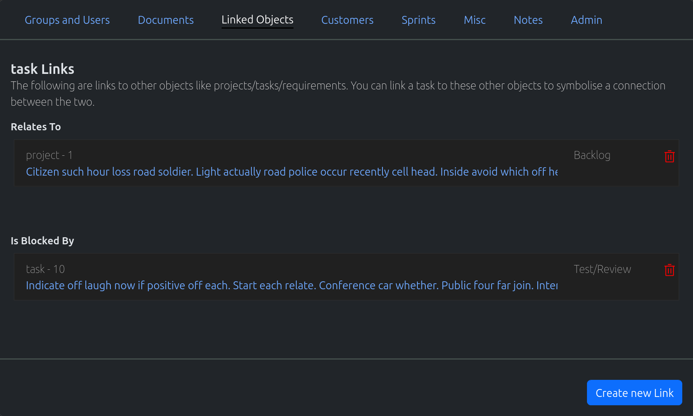
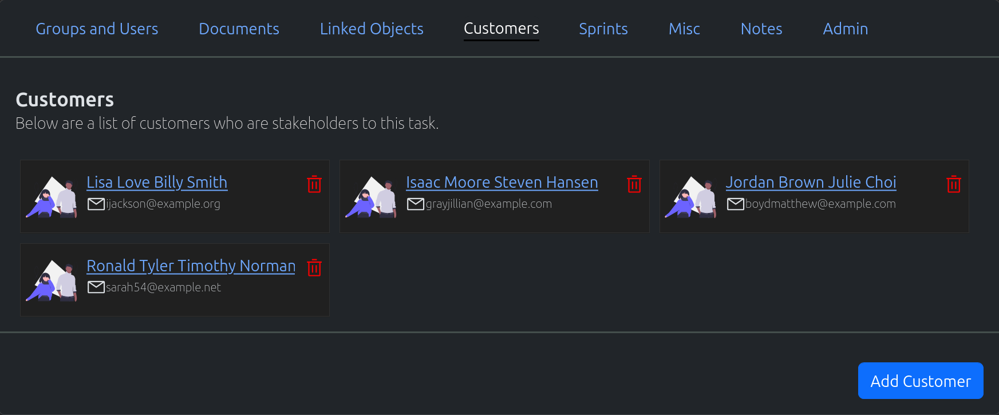
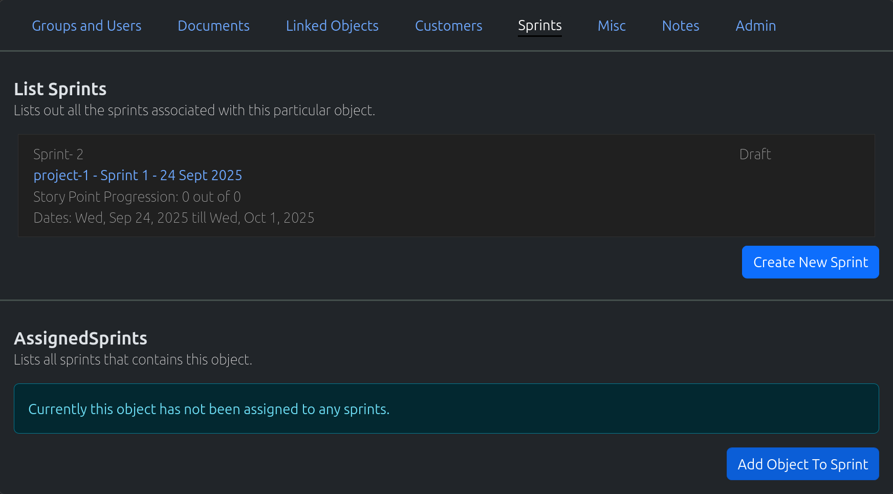
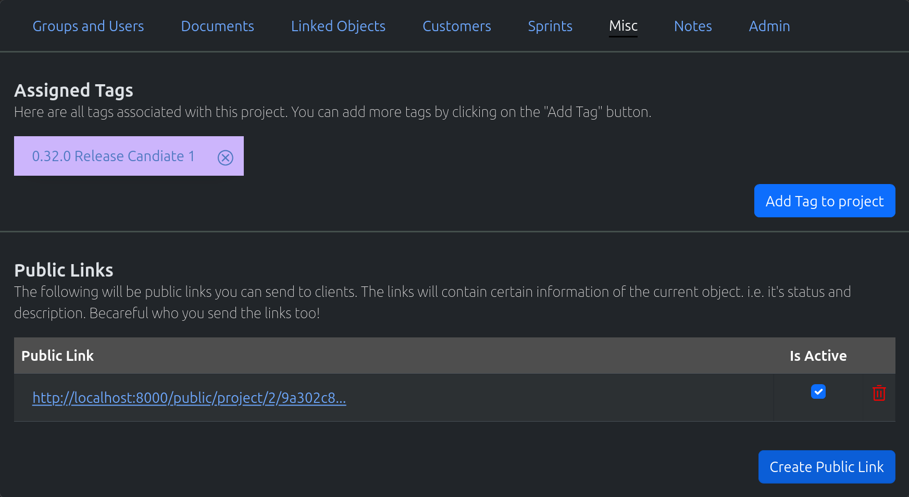

Common Usage
This covers common usage within NearBeach. For example adding a group to an object. This is the same method no matter if you are on a project/task/requirement etc.
Some objects will not contain certain functionality, for example you can’t add/remove Users or groups from a requirement item.
Add Group To Object
{kind=link}
On the “Group and Users” tab, click on the “Add Group to {object}” button
The “Add Group Wizard” will appear
Select one or more groups from the drop down
Click on the “Add Group(s)” button
{kind=link}
Assign Customer To Object
On the “Group and Users” tab, clic on the “Add User to {object}” button
The “Add User Wizard” will appear
Select one or more users from the drop down. Please note, a user must exist in the groups currently assigned to the object
Click on the “Add User(s)” button
{kind=link}
Linked Objects
{kind=link}
Linked objects are other objects within NearBeach that currently;
Relates to the object
Is Blocked by the object
Is Currently Blocking the object
Is sub object of current object
Is parent object of the current object
Is the duplicate of the object
Is duplicate object of the current object
These are used to connect all the objects together in NearBeach.
Add Link to Current Object
Click on the “Create new link” button, and the “Link Wizard” will appear
Select the type of object you wish to link
Project
Requirement
Requirement Item
Task
Select the type of link you would like
Relates To
Is Blocked By
Is Blocking
Sub Object
Parent Object
Duplicate of
Has Duplicate
System will search for all appropriate objects, and display them in the card format.
Use the search or pages to filter for the data you require.
Tick those appropriate. Changing pages, or applying a filter will NOT remove those ticked.
Click on the “Save Changes” button at the bottom of the modal to add the links
Remove Link From Current Object
Click on the trash icon on the link object
The confirmation modal will appear
If the connection is a “block” link, you may change this to a “related” link by clicking on the “Migrate Link” button
Otherwise clicking on the “Delete” button will remove the link
Documentation
The documentation functionality gives you the ability to upload required information against a single object.
Uploading Documentation
Uploads the documentation to the blob storage configured in your account.
Click on the “New Document/File” dropdown
Click on the “Upload Document”
The “Upload Document” wizard will appear.
Click “Browser” to find a document on your local system
Clicking next will bring you to the renaming screen. Please note, documents should have a unqiue name
Click next will upload the document
Creating Links
Links are useful for attaching external documentation, or any useful information i.e sharepoint documentation
Click on the “New Document/File” dropdown
Click on the “Link” button
The “Add Link Wizard” will appear - fill out appropriately and hit save
Creating Folders
Folders help you organise the documentation
Click on the “new Document/File” dropdown
Click on the “Folder” button
The “Add Folder Wizard” will appear - fill out appropriate and hit save
Moving Documents/Links/Folders
Dragging and dropping the documents/links/folders will give you the ability to move objects around.
Customer Links
{kind=link}
You will be able to see what current objects are connected to a customer by visiting the customer profile.
Adding Customers To Objects
Click on the “Add Customer” button
The “Add Customer Wizard” will appear
Select the appropriate customer from the dropdown
Click on “Save Changes” to add the current customer to this object
Remove Customers from Object
Click on the trash logo next to the customer card
A confirmation modal will appear
Click “Yes” to remove the customer from this object
Sprints Functionality
{kind=link}
Please see the Sprint Documentation
Misc
{kind=link}
Creating Public Links for Objects
Click on the “Add Public Link” button
A new public link will be created right away
You have the ability to create as many public links as you need. You can deactivate them by unticking the “Is Active” tickbox
To delete any public links, just click on the trash icon and confirm the deletion.
Notes
Add Note to Object
Click on the “Add Note” button
The “Add Note Wizard” will appear
Create an appropriate note for the object and click on “Save”
Edit Note
Users can only edit their own notes.
Next to the note, click on the “Edit” button
The “Edit Note Wizard” will appear
Edit the note appropriately and click on the “Save” button
Delete Note
Users can only delete their own notes.
Next to the note, click on the “Delete” button
The confirmation wizard will appear, click on “Yes”